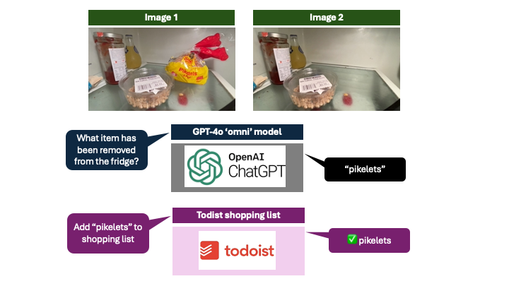

FridgeBot — GPT-4o shopping list automation
Posted

FridgeBot — GPT-4o shopping list automation
Monitoring the contents of my fridge and automatically adding grocery items to my shopping list with the new GPT-4o vision API
OpenAI recently announced their new generative AI model GPT-4o — the “o” stands for “omni,” referring to the model’s ability to use mixed modalities including text, speech and video. I wanted to give GPT-4o a real challenge — helping me keep on top of the shopping list by automatically monitoring the contents of my fridge and adding grocery items when I had run out of something.
Processing steps
The fridge door light is used as a signal for when to start and stop looking for changes in the fridge. I’m assuming that anything taken from my fridge has been removed when the door is open and the door light illuminated.
The code does the following
-
Open the camera feed — and use the OpenCV library for real-time computer vision processing
-
Every 500ms we take an image from the video feed and convert the image to grey-scale
-
Calculate mean brightness of the grey-scale image — and use the average value as an indicator for if the fridge door is open
-
If the last image was “dark” and the current image is “light”, we assume the fridge door has just been opened. We wait 500ms for the camera white balance to settle, and save this as image-1 to represent the initial state.
-
We continue to take photos every 500ms, and save the image temporarily as we don’t know when the door is going to close
-
When the average brightness of the latest image drops significantly, we know the fridge door has just been closed. We discard this image (as it is dark), and use the last image taken and save this as image-2 to represent the final state.
Now we have the before and after images, use image-1 and image-2 as inputs to the OpenAI
-
We encode both images as base-64 to transform the binary image data into a sequence of printable characters
-
We use the OpenAI GPT-4o vision API along with prompt ‘What item is missing in the second image?’
-
The response is decoded — and is assumed to be a single word describing what item was in image-1 and is not present in image-2
Knowing the item, we can add to our shopping list
- The Todoist Sync API is used to add the item to our shopping list
Hardware
The final form of this project runs on a RaspberryPi with a live video processing stream within my fridge. In reality this was a little impractical as both power and ethernet cables needed to be routed past the fridge seal.
To demonstrate the steps without the need for specific hardware (or a fridge) you can run this project on almost any machine. The setup steps below use a demonstration video file.
Overview
FridgeBot — fridge monitoring with GPT-4o
Setup virtual python environment
Create a virtual python environment to keep dependencies separate. The venv module is the preferred way to create and manage virtual environments.
python3 -m venv .venv
Before you can start installing or using packages in your virtual environment you’ll need to activate it.
source .venv/bin/activate
pip install --upgrade pip
pip install -r requirements.txt
API setup
Now it’s time to set up the local API secrets.
cp -i config_secrets_example.py config_secrets.py
Edit config_secrets.py with OpenAPI tokens along with the Todoist API secret tokens
FridgeBot — video process only
To run FridgeBot with example video file without calling OpenAI run the following
python fridgebot.py --video media/pikelets.mov
This should generate two files representing the first lit image and the last lit image within the video media/pikelets.1.jpg and media/pikelets.2.jpg
FridgeBot — video process and OpenAI
To run FridgeBot with example video file, calling OpenAI run the following
python fridgebot.py --video media/pikelets.mov --openai
This should generate two files, and query the OpenAI API to identify the item removed — Pikelets
FridgeBot — video process, OpenAI and Todoist
To run FridgeBot with example video file, calling OpenAI and adding item to Todoist
python fridgebot.py --video media/pikelets.mov --openai --todoist
This should generate two files, and query the OpenAI API and add Pikelets to the Todoist shopping list
FridgeBot Code
FridgeBot code — https://github.com/saubury/fridgebot_openai